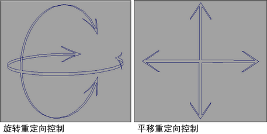

重定向角色集的动画
- 在动画中前进到希望重定向角色发生的位置。
- 选择要重定向其动画的角色集。
- 选择“关键帧 > 创建角色集”(Key > Create Character Set) >
 。
。 - 此时将出现“创建角色集选项”(Create Character Set Options)。
- 根据需要在“角色”(Character)和“属性”(Attributes)部分设定选项。
- 在“重定向”(Redirection)部分中，启用“重定向角色”(Redirect Character)。
- 请执行以下操作：
- 如果要重定向角色的旋转，则启用“仅旋转”(Rotation Only)。
- 如果要重定向角色的平移，则启用“仅平移”(Translation Only)。
- 如果要重定向角色的旋转和平移，则启用“旋转和平移”(Rotation and Translation)。
- 单击“应用”(Apply)。
旋转和/或平移重定向控件将在当前角色集的根处显示。“创建角色集选项”(Create Character Set Options)窗口仍保持打开状态。
- 请执行以下操作：
- 移动旋转重定向控件以更改角色以其为枢轴的位置。
- 移动平移重定向控件以更改当前角色相对于角色以其为枢轴的位置的位置。
- 执行重定向工作流中的第 5 步至第 9 步。请参见重定向动画工作流。
重定向对象的动画
- 在动画中前进到希望重定向对象发生的位置。
- 选择要重定向其运动的对象的根。
- 从“关键帧”(Key)菜单的“角色集”(Character Set)部分中选择“重定向”(Redirect) > 。
- 在“重定向类型”(Redirection Type)部分中，执行下列操作：
- 如果只需要重定向角色的旋转，则启用“仅旋转”(Rotation Only)。
- 如果只需要重定向角色的平移，则启用“仅平移”(Translation Only)。
- 如果要同时重定向角色的旋转和平移，则启用“旋转和平移”(Rotation and Translation)。
- 执行下列操作之一：
- 单击“重定向”(Redirect)。此时旋转和/或平移重定向控件将显示在对象的根处，且“角色重定向选项”(Character Redirection Options)窗口会关闭。
- 单击“应用”(Apply)。此时旋转和/或平移重定向控件将显示在对象的根处，且“角色重定向选项”(Character Redirection Options)窗口仍保持打开状态。
- 请执行以下操作：
- 移动旋转重定向控件以更改角色以其为枢轴的位置。
- 移动平移重定向控件以更改当前角色相对于角色以其为枢轴的位置的位置。
- 执行重定向工作流中的第 5 步至第 9 步。请参见重定向动画工作流。